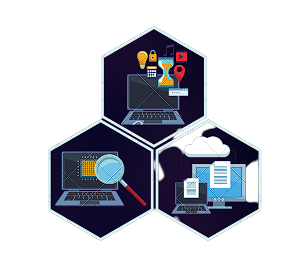

|
Visión
Nuestra visión es convertirnos en el software de inventario más eficiente y confiable del mercado, brindando soluciones innovadoras que ayuden a las empresas a gestionar de manera efectiva sus inventarios, optimizar sus procesos y aumentar su rentabilidad.

|
Misión
Nuestra misión es ofrecer un software de inventario fácil de usar, personalizable y escalable, que permita a las empresas tener un control completo sobre su inventario, en tiempo real. Nuestro compromiso es proporcionar herramientas de análisis y reportes precisos, que ayuden a las empresas a tomar decisiones informadas, a reducir sus costos y a aumentar la eficiencia en sus operaciones diarias. Nos esforzamos por ofrecer un servicio excepcional al cliente, adaptado a sus necesidades individuales y respaldado por un equipo de soporte técnico altamente capacitado.
|